자원 구성
OS, CPU, 메모리, 스토리지와 네트워크의 현재 구성
기업 연계 프로젝트 결과 발표
고객 내부망 서버의 규칙 기반 평가 시스템 구축
Context and product
클라우드 이전과 재해복구에 필요한 현재 환경 정보의 공백에서 출발해, 프로젝트의 목표와 제품의 역할을 정의한다.
Background
클라우드 이전과 재해복구 사양을 정하려면 현재 환경을 먼저 정확히 알아야 한다.
고객 내부망
서로 다른 OS와 자원 구성
현재 환경 파악
의사결정에 쓸 수 있는 현재 상태
클라우드 이전 / 재해복구
안전하고 낭비 없는 사양 결정
서버 정보와 실사용량을 함께 파악해 클라우드 이전과 재해복구 사양의 근거를 만든다.
Problem
현재 환경을 파악하지 않으면 실제 부하와 변화 방향을 판단할 수 없다.
현재 환경에서 먼저 파악할 정보
OS, CPU, 메모리, 스토리지와 네트워크의 현재 구성
평균과 피크 사용량, 자원별 병목
용량 소진, 상승 추세, 반복 포화
발생하는 판단 왜곡
과소 할당
과다 할당
Goal
수집한 현재 환경을 원하는 범위와 수신자에 맞는 평가 결과로 제공한다.
현재 환경
수집한 사실
제공 범위
원하는 단위의 대상 현황
수신자
필요한 깊이의 결과
Product
모니터링 Agent가 전달한 현재 환경 정보를 수집 백엔드 서버가 평가하고 결과로 제공한다.
현재 환경 정보 전달
고객 내부망 서버의 인벤토리와 metrics
규칙 기반 평가
자원 적정성 분류와 운영 신호 평가
결과 전달
JSON Export를 포함한 결과 전달
Assessment architecture
Agent fleet의 Monitoring Agent가 AMQP 메시지를 발행하고 Assessment Engine이 수집, 저장, 평가와 결과 제공을 처리한다.
Customer internal network
Agent fleet
inventory / metrics
Engine host / container stack
Assessment Engine
Message ingestion
Result delivery and background
TimescaleDB FastAPI Web / REST API
Product capabilities
현재 환경 정보 수집과 자원 적정성 평가가 중심이고, 결과 활용을 위한 파생 기능을 함께 제공한다.
Primary capabilities
인벤토리와 실사용량을 지속 수집
피크와 변화 추세를 누적
공통 규칙, 권고, 운영 신호
Derived capabilities
Web Dashboard / Service catalog
Customer / Engineer Report
Assessment API / JSON Export
ZDM 설치 작업과 결과 추적
Site conditions and validation
불확실한 고객 내부망 조건을 시험 가능한 환경으로 구성하고, 배포부터 데이터 저장까지의 수집 경로를 확인한다.
Site discovery
현장에 수집 장비를 반입하기 전, 확정된 요구와 알 수 없는 인프라 및 접근 조건을 함께 확인해야 한다.
CentOS/RHEL 6부터 현대 Linux, Windows Server 2003 SP1부터 현대 버전
OS별 C 기반 단일 바이너리를 서버에서 실행
물리 환경, public cloud, OpenStack private cloud 등 플랫폼이 미확정
인터넷 연결과 SSH 접근 가능 여부가 현장마다 다름
이 조건에서 SSH, Ansible, offline injection 배포 경로와 현장 수집 장비까지의 전달 경로를 검증한다.
Validation setup
현장 조건에 대응할 가용 자원인 OpenStack private cloud로 혼합 OS 서버 fleet과 단일 Engine VM을 구성했다.
Agent fleet
C Native Agent binary installed on each Agent VM
Virtual network routing
Validation endpoint: Docker Compose on Engine VM
Agent fleet에서 단일 Engine VM까지의 메시지 경로
Validation access
주어진 Windows jump host RDP 권한을 출발점으로, VPN 기반 원격 개발과 내부 Horizon 브라우저 접근 경로를 구성했다.
검증과 API 호출
SSH / subnet routing
원격 개발과 여러 VM의 자동 생성 및 관리
Linux control VM을 경유한 화면 기반 제어
API와 Horizon 모두
여러 VM 생성 및 관리
Validation evidence
OpenStack Horizon의 인스턴스 목록에서 혼합 OS 서버와 Windows Server 세대별 검증 대상을 확인했다.
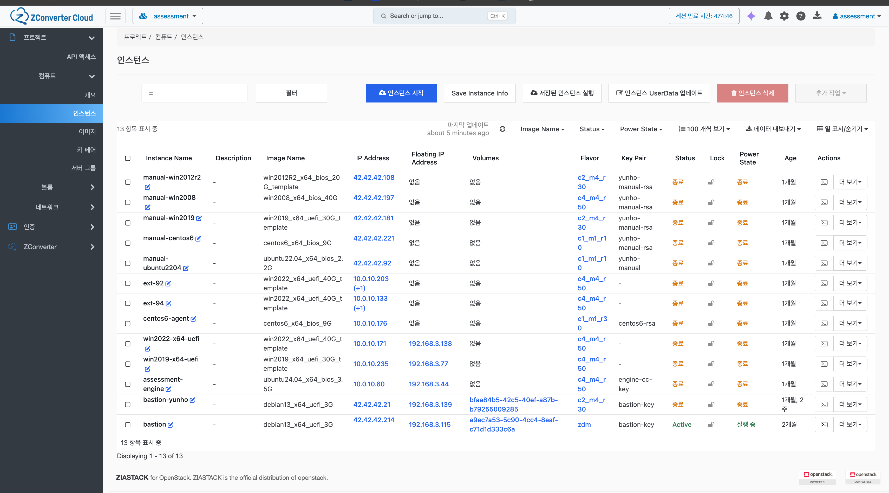
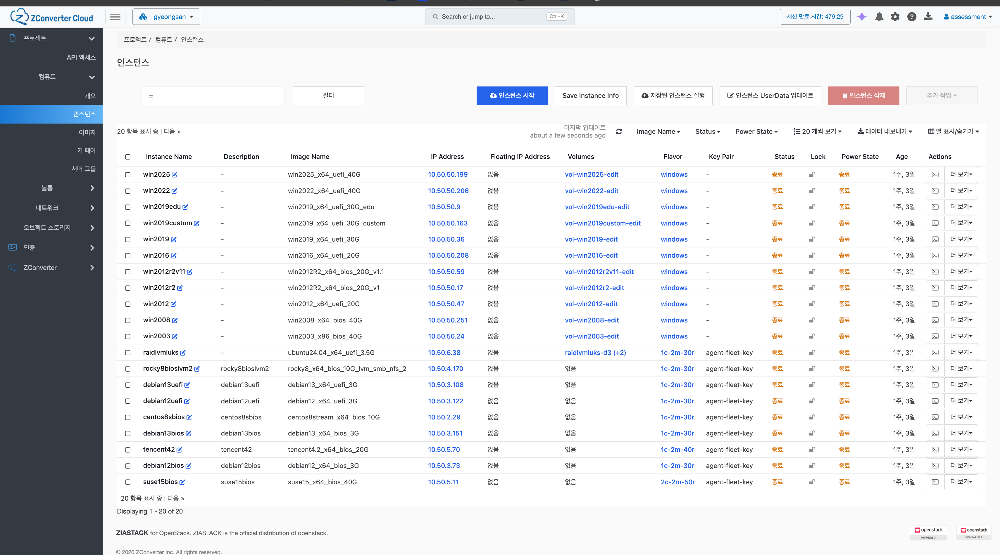
Reproducible validation
Terraform과 OpenStack API로 검증 환경을 만들고, Agent 준비 방식은 대상 조건에 맞춰 선택했다.
OpenStack 자원과 준비 스크립트 선언
선언한 검증 자원을 생성
Agent 설치와 초기 준비
Linux Agent fleet 준비 자동화
rescue volume attach / Windows registry hive
Deployment and collection validation
혼합 OS 환경에서 Agent와 Engine을 배포하고, 서비스 기동부터 데이터 저장까지 이어지는 구간을 확인했다.
Linux와 Windows에서 Agent service 기동
Web, Consumer, Worker와 데이터 서비스 기동
VALIDATED COLLECTION PATH
배포, 서비스 기동, 메시지 발행, Consumer 처리, DB 저장
판정 정확도, 장기 운영 안정성, 고객 운영 배포 전체
Agent and Engine
OS별 관측값이 공통 메시지로 바뀌고, Engine의 컴포넌트가 수집, 저장, 평가와 결과 전달을 나누어 처리한다.
Monitoring Agent
Agent는 OS가 제공하는 원시 정보를 직접 읽어 같은 메시지 구조로 정규화하고 RabbitMQ에 발행한다.
커널과 시스템 파일을 직접 파싱하고, 서비스 정보는 OS 제공 명령으로 보완.
Build: musl static binaryWindows API, IOCTL, 성능 계측값과 registry 데이터를 질의.
Build: single i686 / runtime generation splitEngine 스키마 계약을 따름
OS별 raw 단위공통 단위
rate, utilization, 평가는 Engine 책임
JSON envelope과 datapoint array를 AMQP 메시지로 발행.
발행 데이터 구조
OS, CPU, storage, network, services
CPU, memory, disk, network의 counter와 gauge
agent_id, collected_at, schema_version
Assessment Engine
수집, 평가, 비동기 작업, 보조 상태의 책임을 분리하고 RabbitMQ와 DB를 중심으로 연결한다.
OS 정보 수집과 task 실행
Assessment Engine
메시지 전달과 routing
수신 검증과 저장
데이터 영속
평가와 결과 제공
보고서와 task 마감
cache, online, 중복 차단
화면, 보고서, API
Collection sequence
Monitoring Agent가 발행한 현재 환경 정보는 Broker와 Consumer를 거쳐 DB에 저장되고, 정상 처리 뒤 ACK 된다.
inventory / raw metrics
durable queue
validate / persist
inventory / time series
01server.inventory / server.metrics 발행
02queue delivery
03schema 검증과 중복 처리 확인
04upsert / time-series insert
05정상 처리 ACK
형식 오류 또는 재시도 한도 초과
DLQ예외 메시지 분리
Agent와 DB를 직접 묶지 않고 Broker를 경계로 둔다.
정상 메시지는 DB 저장이 끝난 뒤 처리 완료를 알린다.
형식 오류와 처리 불가 메시지는 DLQ로 분리한다.
Engine architecture
처리 경로와 데이터 수명에 따라 컴포넌트의 책임과 장애 범위를 나눴다.
Agent 발행과 DB 저장을 직접 묶지 않고 durable queue를 사이에 둔다.
Consumer 재시작과 발행 및 저장 속도의 차이를 Broker가 흡수FastAPI는 Job을 등록하고 Worker는 대기 중인 작업을 가져와 별도 프로세스에서 처리한다.
HTTP 응답과 보고서 생성 및 task 마감의 실행 시간을 분리DB는 inventory, 시계열, task와 report를 보존하고 Redis는 cache, online TTL과 중복 차단을 맡는다.
Redis 장애 시 DB 조회와 UNIQUE 제약으로 핵심 처리를 계속Core implementation
수집한 현황을 환경과 서버 단위로 제공하고,
규칙 기반 평가와 보고서 발행 및 ZDM 설치로 연결한다.
Inventory and metrics
같은 인벤토리와 메트릭을 환경 전체의 집계와 개별 서버의 상세 정보로 제공한다.
수집 대상의 규모, 구성과 자원 상태를 한 화면에서 파악한다.
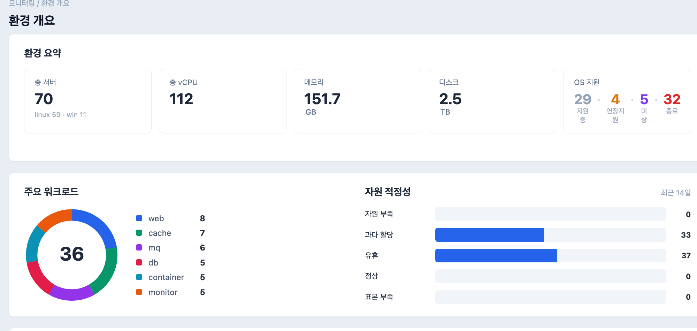
한 서버의 구성, 실행 항목과 자원 상태를 상세하게 확인한다.
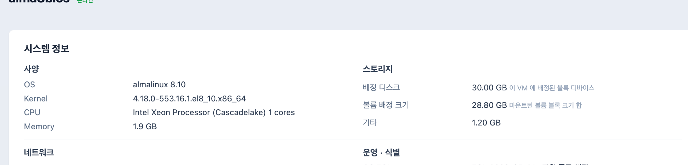
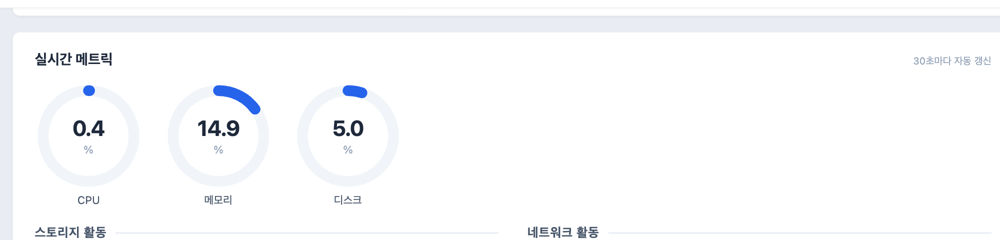
환경 집계 -> 대상 선별 -> 서버 상세같은 수집 데이터를 조사 범위에 맞춰 단계적으로 확인한다.
Assessment rules
5개 자원의 이용률, 포화, 오류 신호를 관측하고 신호 성격에 따라 사이징과 상태 진단으로 나눈다.
CPU, Memory, Disk capacity
Disk I/O, Network
5개 자원의 health signal
HOST ROLLUP사이징 판정 -> 자원 부족, 과다 할당, 유휴, 적정, 표본 부족
기본 14일, p95와 자원별 대표 통계 사용
Linux와 Windows 신호원을 공통 평가 축으로 변환
이중 조건과 저활동 필터로 순간 노이즈 제외
없는 값을 추정하지 않고 관측 한계를 표시
충분한 이력과 안정 추세에서만 구체 감축
Assessment result
평가 기간과 기준 시각을 선택하고 환경 분포부터 서버별 판정, 권고와 신뢰도까지 확인한다.

환경 전체 분포
서버별 분류와 권고
성능, 품질과 신뢰도
Asynchronous report
여러 서버의 집계와 보고서 조립을 HTTP 요청에서 분리하고, 생성 과정과 발행 결과를 DB에 보존한다.
환경 전체와 선택한 여러 서버의 집계가 끝날 때까지 HTTP 연결을 유지하지 않는다.
생성 진행과 실패를 pending, running, succeeded, failed 상태로 기록하고 조회한다.
새 데이터가 수집돼도 이미 발행한 보고서는 같은 범위와 기준 시각의 값을 유지한다.
범위, 기준 시각과 보고서 유형을 검증한다.
FastAPI가 job을 저장하고 식별자를 즉시 반환한다.
Worker가 대기 중인 job을 가져와 평가 ViewModel과 결과 JSON을 만든다.
브라우저가 상태를 polling하고 저장된 결과를 렌더링한다.
같은 범위, 입력과 보고서 유형의 진행 중 job은 기존 작업에 합류한다.
succeeded job은 결과 JSON을 다시 계산하지 않고 그대로 렌더링한다.
Report variants
같은 평가 결과를 범위와 독자에 따라 환경 또는 개별 서버, 고객용 또는 엔지니어용으로 구성한다.
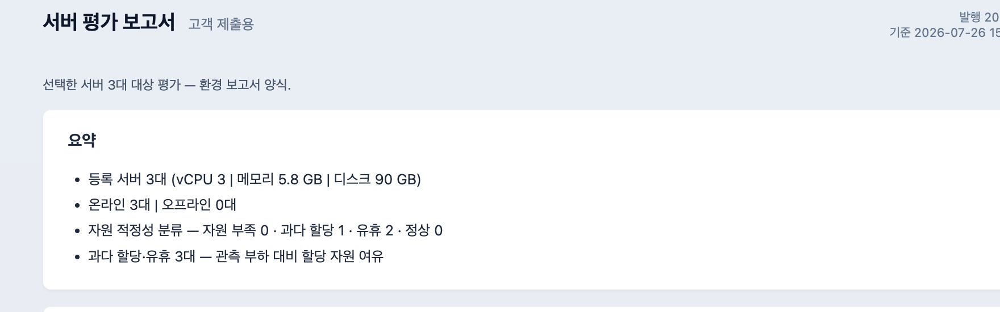
환경 현황, 분류 분포와 조치 대상을 회의와 보고에 맞게 요약
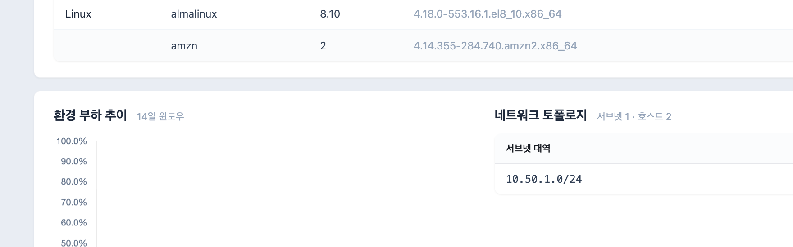
환경 요약과 평가 결론에 부하 추이, 네트워크 토폴로지와 서버별 판정 근거 추가
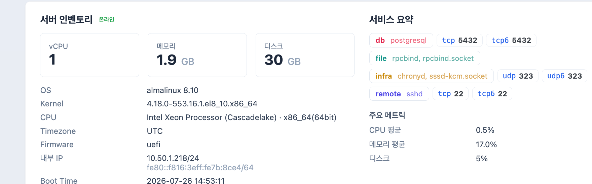
선택 서버의 구성, 주요 지표와 평가 결론을 간결하게 전달
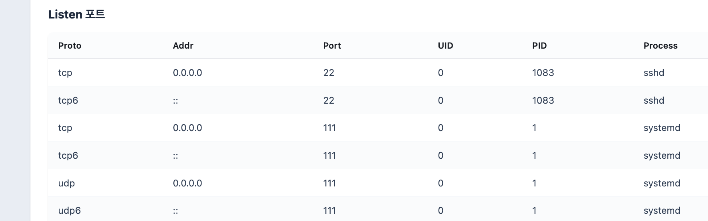
인벤토리와 평가 결론에 자원별 통계, 포화 및 오류 신호와 시스템 상세 추가
Controlled install task
서버 목록에서 대상을 선택해 설치를 발행하면 Engine과 Agent가 서버별 실행 결과를 저장한다.
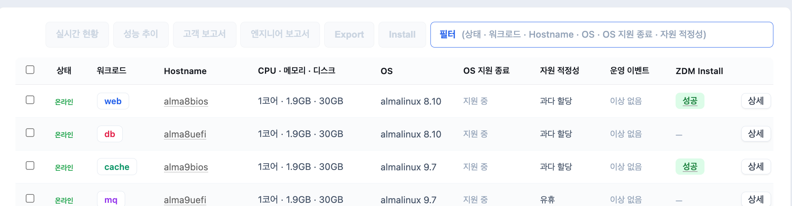
1서버 선택 2Install대상 서버, ZDM 주소와 계정을 검증하고 pending task를 저장한다.
task.install.<agent_id>로 지정 Agent의 queue에 작업을 전달한다.
허용 host, 파일 크기와 checksum을 확인한 뒤 OS별 ZDM 패키지를 실행한다.
Consumer가 task.result를 받아 성공 또는 실패, 종료 정보와 로그 tail을 저장한다.
Install status
서버 목록에서 설치 상태를 확인하고, 상세 화면에서 실행 결과와 실패 원인을 추적한다.
목록 배지가 polling으로 종결 상태까지 갱신된다.
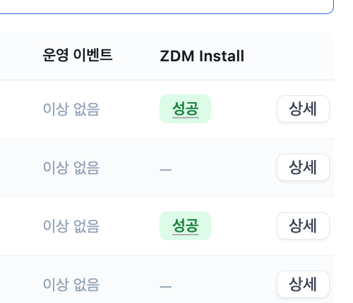
배지를 선택해 종료 정보, 실패 사유와 로그 tail을 확인한다.
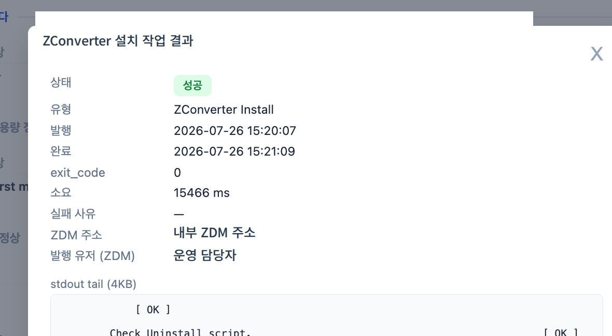
Agent 결과 대기
설치 완료 확인
실행 실패 또는 timeout
Use cases and outcomes
두 가지 업무 흐름과 프로젝트 결과를 확인한다.
Use case 1
환경 전체에서 조치 후보를 정하고 필요한 서버의 근거를 확인한다.
분포 확인과다 할당, 유휴, 부족, 정상
대상 선별조치가 필요한 서버의 우선순위
상세 확인CPU, 메모리, 스토리지의 원인
조치 결정증설, 축소, 통합, 관찰
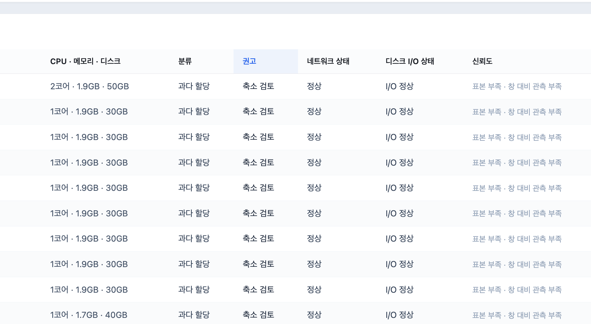
수십 대의 상세 화면을 먼저 열지 않고 환경 수준에서 조치 순서를 정한다.
Use case 2
규칙 기반 분류와 실사용량을 대상 VM 사양과 구성안 작성에 필요한 입력으로 제공한다.
원천 환경
사람이 아닌 도구도 같은 결과를 소비
대상 설계
대상 설계 근거 제공
외부 도구 책임VM 생성과 실제 클라우드 이전 실행
Project outcomes
하나의 현재 환경 정보를 운영, 마이그레이션과 자동화 도구의 공통 근거와 입력으로 제공한다.
인벤토리, raw metrics, 규칙 기반 평가
Dashboard와 Report의
조치 후보와 우선순위
VM 사양과 재해복구
구성안의 판단 근거
Assessment API,
JSON Export
운영 담당자, 마이그레이션 설계자와 자동화 도구가 같은 현재 환경 정보를 각자의 업무에 사용한다.
Technical details
본문의 업무 흐름을 뒷받침하는 Agent, 메시지 계약, 평가 기준, 비동기 작업과 배포 경계를 질문에 맞춰 확인한다.
Appendix 01
OS별 단일 바이너리와 현장 접근 조건에 맞는 배포 경로
인벤토리와 누적 카운터를 수집하고 계산은 Engine에 맡긴다.
Agent와 Engine은 준비된 VM에 배치한다. VM provisioning은 별도 환경 구성 책임이다.
Appendix 02
수집 메시지와 원격 작업이 분리된 양방향 계약
버전 envelope의 schema_version, major 일치
식별 최초 생성 후 보존하는 agent_id
확장 새 필드는 수용하고 미사용 필드는 명시적으로 제외
실패 메시지 결함은 DLQ, 외부 일시 장애는 제한 재시도
Appendix 03
시계열 저장과 메시지 재전송을 함께 고려한 2단 방어
같은 message_id의 반복 처리를 먼저 차단한다.
Redis 장애 시 fail-open7개 시계열 테이블의 자연키 충돌을 저장 단계에서 흡수한다.
최종 중복 방어TimescaleDB 조회는 시간 범위를 필수로 사용하고, 누적 카운터 집계는 counter_agg를 사용한다.
Appendix 04
자원마다 이용률, 포화, 오류 신호를 조합하는 USE 기반 판정
Appendix 05
낮은 사용률만으로 축소 사양을 즉시 확정하지 않는 안전 게이트
기본 신뢰도를 낮추는 4개 단서
미래 방향을 제한하는 별도 단서
CPU와 메모리의 자기 자원 평가에만 반영
조건이 부족하면 과다 할당 표시는 유지하되 권고는 관찰 지속으로 제한한다.
Appendix 06
DB 상태 전이와 active UNIQUE로 중복 발행과 다중 서버 처리를 제어
범위, 기준 시각과 유형을 하나의 hash로 고정
pending/running 충돌은 기존 job에 합류
pending 1건을 running으로 원자 전이
succeeded result JSON을 그대로 렌더링
1개 job이 1개 정적 스냅샷을 생성
parent job과 N개 child snapshot이 모두 성공해야 완료
Appendix 07
같은 평가 결과를 연결형 API와 파일형 산출물로 제공
클라우드 이전 또는 재해복구 도구가 최신 평가를 직접 조회한다.
GET /api/assessmentEngine에 직접 접속하지 않는 도구에 같은 계약을 파일로 전달한다.
POST /api/exports/inventory공통 계약 필드
보고서는 사람이 읽고, API와 Export는 자동화 도구가 소비한다. 계산 규칙은 동일하다.
Appendix 08
허용된 패키지를 검증한 뒤 실행하고 결과를 실행 이력으로 남기는 제한된 원격 작업
등록 서버와 허용 범위 확인
허용 host와 sha256 확보
다운로드, 검증, 설치
success 또는 failure, timeout 사유
임의 명령 실행이 아니라 ZDM 설치 계약만 지원한다.
Appendix 09
구현된 품질 게이트와 단일 VM 배포 경로
Python 3.14, FastAPI
ruff, pyright, pytest, 타입 계약
GHCR, cosign, SBOM, provenance
VM pull, migrate, health, rollback
릴리스와 배포 절차가 구현돼 있다. 69대 시험은 Engine 운영 배포 검증이 아니라 Agent 수집 경로 검증이다.
Appendix 10
현장에서 만날 수 있는 OS와 접근 제약을 재현한 Agent 검증 환경
systemd, SysV, 구형 배포판, BIOS/UEFI
Server 2003부터 현대 세대 이미지
Standard cloud-init 또는 SSH 배포
Rescue 키와 서비스의 offline 주입
Windows 부팅 볼륨과 registry hive 주입
Verify inventory와 metrics의 Engine 등록 확인
검증 범위는 Agent 배포와 수집 경로다. 전체 진단 정확도와 장기 운영 안정성은 별도 검증 대상이다.
Appendix 11
현재 구현의 책임과 클라우드 이전 및 재해복구 솔루션의 경계
HA와 zero-downtime 구성은 미도입
TLS와 접근 통제는 배포 인프라 책임
공동 subnet 기반이며 실제 도달성 검증 아님
별도 PDF 생성 엔진 미도입
API와 Export가 설계 근거 제공
69대 검증은 전체 제품 E2E 검증 아님